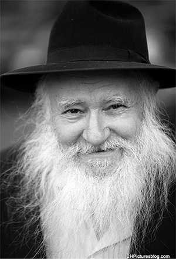

In Service of the Rebbe 24/7
We recently lost a special Chassid, R’ Itche Springer a”h, who was known to everyone but whom no one really knew. * His daily schedule reflected the sichos and horaos of the Rebbe. For years, he fought the Rebbe’s wars and worked hard to spread the Besuras HaGeula and the identity of the Goel. * He was one of the Rebbe’s soldiers, a true mekushar. He had a youthful spirit like a Tamim in Tomchei T’mimim till his final day.
ESCAPE FROM THE NAZIS

He was seven years old when World War II began. The Germans soon came to their town, Nisko, which was in the Lvov district. At first, the Germans demanded that the Jews bring them all their gold. After receiving what they wanted, they ordered the Jews to leave the area. That is how the Jews came to be expelled to territory under Russian rule. In order to get there, they had to cross a river which separated between the two armies.
At a certain point, the Russians had to withdraw. It was in the middle of Simchas Torah and R’ Itche remembered that day:
“Our family refrained from desecrating the Yom Tov. The Nazis soon swarmed in and you could feel the hatred in the air. I myself received a harsh blow from a gentile. We knew we had to escape as soon as possible.”
The Springer family endured a lot until they managed to cross the river. At a certain point, many gentiles from a nearby village surrounded them and sought to kill them, just like that, for no reason.
“The first villager we saw called his friends and they came quickly to murder us. We despaired. There we were, on the banks of the river, with the Russians on the other side, and in a moment, it would all be over. We were women, children and two men on the wagon (my father and my uncle). We sat there helplessly and watched as the angry ruffians approached us.
“Suddenly, like angels, two cavalrymen from the Austrian army who were on border patrol approached. They stopped the menacing villagers and stood there with their horses to ensure that we crossed the river in peace.”
The family reached the village Ozerna and was considered war refugees. In this capacity, they had to register with the Russian authorities. The Russians said that those who wanted to return to their homes in Poland should register as refugees. The truth emerged shortly – all those who said they did not want to remain there, were sent to Siberia.
“It turned out that what seemed like a calamity, a galus within a galus, is what saved my family’s life. The Germans ended up eventually taking control of that town and they killed all the Jews including my uncle, my mother’s brother, may Hashem avenge their blood.
“We, who were sent to Siberia, were put in a labor camp. The men had to work in a gold mine and also had to cut lumber. It was very hard work. Huge trees were cut in the local forest each day.”
At the end of the war, thanks to the treaty between Russia and Poland, the refugees were allowed to leave the camp. Since they heard about malaria and epidemics that had broken out in various places, the family preferred remaining in a village not far away, still in Siberia, while waiting to leave Russia.
“Although we were the only Jewish family in the area, throughout those years we kept kashrus b’hiddur, including chalav Yisroel. We baked matzos ourselves and led Jewish lives. Still, being cut off from other Jews was untenable. The Siberian cold was unbearable. I once waited for a friend in the street and since I didn’t have gloves, my fingers froze and turned blue, even though I was outside for just a short time. All the doctors’ efforts were for naught and they despaired. After three days, the blood suddenly began to flow again and my fingers were saved. It was an open miracle.”
Some years later, R’ Chaim, his father, passed away.
DISCOVERY IN POKING
As a result of the treaty between Poland and Russia, the Springer family left Russia for Poland. Upon their arrival there, their sons went to a Litvishe yeshiva.
“I remember being astonished. Bachurim without beards who learned enthusiastically.
“I heard praise for Lubavitchers from my older brother, Yechezkel. He had met them and seen their noble conduct, their davening, and avodas Hashem. They made a tremendous impression on him.”
At this time, a group of yeshiva bachurim received permission to fly to England. After lengthy discussion, the Springer family decided to split up. The mother remained in Poland with her oldest son, Yaakov, and the two younger brothers, Yechezkel and Yitzchok, went with their friends to a yeshiva in Prague on their way to London.
“We visited Prague several times, but for some reason, we were unable to find the cemetery where the Maharal is buried. One Friday (in our fifth week there), we finally got there and my brother put a note with one request: that we be Chassidim! That is what happened. Within a few days we packed our bags and left Czechoslovakia for Germany.”
On Rosh HaShana 5707/1947 they arrived in Germany.
“That is where the change took place that changed all our plans. We never went to London. During the Aseres Yemei T’shuva, we arrived at the DP camp in Poking where R’ Nissan Nemanov, R’ Zalman Haditcher, R’ Yisroel Neveler, R’ Avrohom Eliyahu Plotkin and R’ Zalman Shimon Dworkin were living. We were swept up in the world of Lubavitch.
“We didn’t think much about it, but immediately joined Yeshivas Tomchei T’mimim. Until today, I cannot forget how surprised I was when I saw one of the Chassidim standing in tallis and t’fillin in the afternoon. It was like something from another galaxy to me … I rubbed my eyes. That a forty minute davening could take five hours was unbelievable to me.”
Young Yitzchok Springer, who had just taken his first steps in the world of Lubavitch, began learning Gemara in R’ Zalman Vilenkin’s class. The mashpia was R’ Nissan Nemanov.
“I don’t have many memories of the yeshiva in Poking because I was too young, but I remember that they whispered that the Rebbe Rayatz was Moshiach. A classmate once took me aside and said: You know the Gemara in Sanhedrin that describes Moshiach as someone who has problems with his feet? The Rebbe fits that description (the Rebbe Rayatz could not walk at that time, and in addition suffered greatly from other ailments).
“I readily accepted the idea.”
The Chassidim dispersed, each one to the country that the Rebbe sent him to. Some went to France, some to the United States, and some to Eretz Yisroel.
“We went to Paris where our family reunited.”
The family then boarded a ship for Eretz Yisroel. When they arrived, they joined Lubavitcher families in Kfar Chabad.
“We were among the first residents there,” said R’ Itche proudly.
In Eretz Yisroel too, he and his brothers attended the Chabad yeshiva on Rechov HaRav Kook 16 in Tel Aviv, which was headed by R’ Chaim Shaul Brook. For many years afterward, R’ Springer would wax nostalgic over his farbrengens.
SPRINGER, LEAVE YOUR LIMITATIONS!
R’ Yitzchok’s Chassidic soul burned fiercely and he did not find his place in Eretz Yisroel. He pined to see the Rebbe. In 5710 he wrote to the Rebbe and asked permission to visit him.
“I begged for permission, but the Rebbe pushed me off and said I should learn for a while longer where I was.”
His desire to go to the Rebbe came to the fore again in 5713 and he wrote to the Rebbe, this time adding “the hanhala of the yeshiva think I must go to the Rebbe.” This time, the answer from the Rebbe was positive, though the Rebbe gently pointed out the exaggeration in the “must go” phrase.
After much effort in obtaining the necessary papers, as well as delays concerning his entering the US, he was finally able to enter the United States.
“I saw the Rebbe for the first time at Mincha on Erev Shabbos Mevarchim Nissan 5714. It is indescribable; it’s not of this world …
“Pesach night, after being allowed to go upstairs and see the Rebbe in the Rebbe Rayatz’s room, we bachurim went downstairs and danced. When you have such a Rebbe, how could you not dance?
“As we danced, there was the Rebbe dancing with us! He would escort his mother home and when he returned, he joined the dancing. To dance with the Rebbe, in the same circle! As the simcha intensified, the Rebbe grasped the lapel of my jacket and said, ‘Springer, go out of your limitations!’
“I was in 770 just a short time and the Rebbe was already calling me by my name! I felt that we were all children of one father. It echoes in my ears, ‘Springer, go out of your limitations!’”
R’ Itche refused to talk about the various yechiduyos he had over the years. He said, “It is something you don’t tell others, it’s an inyan atzmi.”
What he was willing to tell had to do with the line he tossed off, “My English is thanks to the Rebbe.”
“One of the times I had yechidus as a bachur, the Rebbe wanted to know if I participated as a teacher in the released-time program, offered to Jewish public school students. The Rebbe also asked whether I spoke English.
“The hint was enough for me. I asked a friend to teach me. Thanks to my listening to the Rebbe’s hint, many students became full-fledged Lubavitchers.”
ON SHLICHUS TO BALTIMORE
One day, R’ Springer was called to the secretaries’ office where R’ Chadakov told him, “You will be sent to Milan, but you should know that the shliach there is R’ Gershon Mendel Garelik and you have to be subordinate to him. You don’t have to answer now. You can think about it and respond later.”
“I left the office and hadn’t yet walked out of 770 when I thought, why do I need to think about it? The Rebbe is offering you something – agree to it immediately! I went right back in and said I was willing to go. R’ Chadakov nodded but didn’t say anything.”
R’ Springer did not end up being sent to Italy. Some time later, he was sent to Baltimore. At that time, Judaism in the United States was sorely lacking rabbanim, shochtim and the like. Other groups knew that if they needed manpower, Lubavitch was the one to turn to.
There was an old Talmud Torah in Baltimore called She’aris HaPleita, which was affiliated with Hungarian Jews. When they needed a teacher, they asked Merkos L’Inyonei Chinuch to send one. R’ Chadakov called R’ Itche into his office and when the latter agreed, he submitted a letter to the Rebbe which was responded to with “go, and make a contract.”
“I spent the evening hours, after teaching, giving classes and lectures on Judaism in the local university. Boruch Hashem, there were many wonderful results.
“I also saw positive results from the Chassidus classes I gave in yeshiva, and from the children in the Talmud Torah. Some were niskarev to Chassidus and to Chabad.
“Aside from the fact that I went to 770 for every special day in the calendar, which they did not like, they wanted me to be part of the minyan three times a day because they did not have many students of bar-mitzva age (since most were children). As for me, whether because of my classes at the university or in yeshiva, I would show up late. It reached a point where in the annual contract they cited a Talmudic expression indicating that prayer should be done in the place that one learns Torah. The hint was obvious. I went to the Rebbe with the contract and I pointed out their demand that I attend all the t’fillos in order to complete the minyan. The Rebbe told me to add one word, “try,” that I would try and make the minyan.
“Well, they did not grasp the subtlety of that particular qualification and so they didn’t say anything, but I continued coming late because it was important for me to continue my shiurim. The following year, they did not agree to my ‘trying.’ This time, the Rebbe did not tell me to renew the contract.
“I became a free agent. A friend and I decided to open a Beis Lubavitch from where we could expand our work ten-fold. We distributed religious items produced by Merkos and books from Kehos and Boruch Hashem we had many mekuravim from this period too.”
IF THE REBBE DOESN’T COME, NEITHER DO I
R’ Springer married his wife Aidel on Rosh Chodesh Tammuz 5719. Before the wedding, R’ Itche submitted a request that the Rebbe be the mesader kiddushin.
“When I asked the Rebbe, he said it depended on the kalla’s father. He asked me who would be escorting me, since my father had died and my mother was in Eretz Yisroel.”
The Rebbe was referring to the fact that the kalla’s father did not have a beard at that time and obviously, a future son-in-law was not going to try and influence his father-in-law to grow a beard. Apparently, the Rebbe made his agreement to officiate dependent on the father having a beard, but his future father-in-law demurred since he thought this was only appropriate for learned Jews. So R’ Itche said, “If the Rebbe doesn’t come to the chuppa, neither will I.” Needless to say, the chuppa took place with the father of the kalla present with a newly sprouting beard.
After the wedding, the father-in-law had yechidus and said that he was willing to grow a beard only because the Rebbe requested it. The Rebbe said: Not because I said so, but because it says in Shulchan Aruch!
THE FATHER OF THE BACHURIM
R’ Springer worked in his shlichus in Baltimore while trying to support himself by selling books from Merkos L’Inyonei Chinuch. He wasn’t making enough money but he insisted on remaining in his place of shlichus. “You don’t leave a place of shlichus for anything,” he told himself repeatedly, even though the situation was dire.
In 5732, at a yechidus, the Rebbe told him to move back to Crown Heights. It wasn’t that his shlichus had ended; on the contrary, the activities he did in Crown Heights were manifold. He worked on Shleimus Ha’Aretz, Mihu Yehudi, Moshiach, and more.
At first he worked as a teacher in Oholei Torah, since he had experience working with children of all ages in Baltimore. Then he was asked to work as a mashgiach in the yeshiva on Troy, which led to his becoming mashgiach in 770.
“20 Cheshvan is a significant date for me. It was my first day as mashgiach in 770.”
Whenever the topic came up, R’ Itche would laugh. In his typical humility he would say, “Whenever I remember who I replaced in this job, I can’t help but laugh. My predecessor was R’ Sholom Morosov, a genius in Nigleh, Chassidus, Kabbala, astronomy, Halacha and homiletics, and R’ Mentlick who was the rosh yeshiva of 770 and who took attendance too. He was a Chassid with all his might and was extraordinarily battul to the Rebbe. And I fill their place; it’s risible.”
Over the years, thousands of talmidim passed through under him. In addition to being a warm person, he expected each talmid to stick to the schedule. For decades you could see him standing there, like a soldier at his post, writing down the names of students, talking with students, listening, advising and directing, like a father to them all.
Sometimes, he wore his “mashpia” hat and would farbreng with the talmidim. He generally did not take the podium, but if he thought a topic deserved to be addressed, he would speak up forcefully until he got red in the face.
“I once asked the Rebbe what I, as the mashgiach, ought to demand of the talmidim. The Rebbe told me, ‘The first thing to demand is diligence and going higher.’”
When bachurim became engaged, they had a talk with R’ Springer. He would show them the Rebbe’s letter that describes the engagement period as “the most precious of all,” and would speak to them with Chassidishe warmth about the importance of spiritual elevation at this time.
In recent decades, when the Rebbe fanned the fire of emuna in the coming of Moshiach, R’ Springer took every opportunity to urge the bachurim to prepare for the hisgalus and to spread the Besuras Ha’Geula and the identity of the Goel.
FROM MIHU YEHUDI TO YECHI ADONEINU
R’ Springer, despite his modesty, held numerous positions. He was the director of the Bedeck HaBayis organization that was commissioned with seeing to the upkeep of 770, chairman of the Shofar Association of America, a member of the Committee for Shleimus Ha’Am and the Movement for Religious Explanation in Israel, as well as a member of the boards of the Matteh HaOlami L’Havoas HaMoshiach and the Matteh HaOlami L’Hatzolas Ha’Am V’HaAretz.
“The Shofar Association was founded not long after the Mihu Yehudi imbroglio in 5730. It was founded after repeated cries from the Rebbe about the tragedy that the law would engender. The Rebbe spoke on this topic for hundreds of hours and one could not remain indifferent.”
The Rebbe said not to involve the name of Chabad, which is why R’ Springer called it the Shofar Association. Its function, like a shofar, was to raise a hue and cry. The organization did numerous things to raise public awareness of the problem of fictitious conversions. He protested through newspaper ads in Eretz Yisroel and the United States (until the prime minister at the time, Shimon Peres, expressed his anger over this). The organization worked to publicize the views of great rabbis from all over the world, arranged demonstrations, t’filla rallies, delegations to Knesset members and ministers who were going to vote on the issue, and publicize painful instances in which gentiles were registered as Jews.
R’ Springer also raised a hue and cry about giving away parts of Eretz Yisroel to our sworn enemies. He was also one of the main supporters of the Mobile Mitzva Tanks in Eretz Yisroel from when it began in 5737. R’ Dovid Nachshon, director of the Mobile Mitzva Tanks, would often consult with him.
In the summer of 5742, in the midst of the Lebanon war, R’ Springer went to Eretz Yisroel, with the Rebbe’s blessing, and joined the tanks’ activities with the Israeli soldiers in Lebanon. He even spent an entire Shabbos with the soldiers on the Syrian-Lebanese border.
During the Gulf War in 5751, the Rebbe spoke firmly about Eretz Yisroel being the safest place. R’ Springer wondered what else could be done to encourage the Jews of Eretz Yisroel. He came up with the idea of arranging a charter flight of hundreds of Chassidim and publicizing what the Rebbe said, all of it covered by the media. He wrote to the Rebbe and received a detailed response: To promote the cause as written in the Torah that the Jews here, in your city – with you at their head should increase in Torah and mitzvos b’pashtus (in actuality). And thanks when he will inform me how much was actually added. I will mention it at the gravesite.
Since the Rebbe told him to propagandize in his own city, he began to do so amongst the thousands of people who came to the Rebbe for a bracha and a dollar. He handed out cards with suggestions for good resolutions.
Over the years, R’ Itche distributed forms and put ads in the biggest newspapers in New York. The ads were designed in such a way that alongside asking everyone to increase in good deeds and mitzvos for the sake of those living in Eretz Yisroel, there was a form on which a person could check what he had committed to doing.
“Over the years, we submitted tens of thousands of good resolutions to the Rebbe (hundreds every week) and received many answers from the Rebbe.”
At a certain point, the headlines of the ads were changed to, “Give a Hand to Melech HaMoshiach,” which was considered quite daring.
“After the T’mimim petitioned me, I decided to revise the wording and with great hesitation I submitted a pile of forms to the Rebbe with the new wording. I received the usual response in which the Rebbe said the notes would be read at the gravesite. Obviously, after that response, I had no more doubts.” (See box)
Since then, R’ Springer was one of the pioneering soldiers in “Moshiach’s army.” He was a role model of a Chassid who lives with Moshiach and publicizes the identity of Moshiach to all. He placed huge ads in New York papers calling upon the public at large to accept the Rebbe’s malchus and to hasten the Geula by increasing in learning Torah and doing mitzvos.
***
In recent years, despite his weakness, R’ Springer continued to go to 770. On Chol HaMoed Pesach he davened in 770 and on Shvii shel Pesach he even went on Tahalucha to a nearby hospital.
He was hospitalized when his condition deteriorated and passed away at the age of 81.
TO WALK AMONGST THE LIVING
In the first letter that R’ Yitzchok Springer received from the Rebbe, in the Aseres Yemei T’shuva 5711, the Rebbe added in a handwritten note: Your name is Yitzchok or Chaim Yitzchok?
This question greatly surprised R’ Springer. “Chaim was my father’s name so how could I be called Chaim Yitzchok?
“Years later, I hung between life and death due to a serious medical problem. The chapter of T’hillim that I said at the time that corresponded to my age took on greater significance. It ended with the verse, ‘to walk before G-d with the light of life.’ I recalled that the Rebbe had actually added the name Chaim to my name and as is common for someone who is critically ill, the name Chaim was added before my name Yitzchok. Who knows?”
THE REBBE APPROVED PUBLICIZING THE IDENTITY OF MOSHIACH
In Teves 5753, R’ Springer, member of the Matteh Moshiach HaOlami, started a huge publicity campaign about the identity of Moshiach. He put ads in The New York Times and other papers, which announced that the Lubavitcher Rebbe is Moshiach and in order to welcome him, we need to do more good deeds. The following is from an interview R’ Springer did with Beis Moshiach long ago:
What made you decide to publicize the identity of Moshiach?
In the months preceding the ads, from the beginning of 5753, the Rebbe encouraged the singing of Yechi nearly every day. It was obvious to all that this was a new era of Kabbalas HaMalchus of Melech HaMoshiach. More and more people asked the Rebbe for permission to publicize that he is Moshiach and to have people sign on the Kabbalas HaMalchus forms. The Rebbe approved this and even encouraged the Chassidim who were undertaking these projects.
In light of this, I spoke with some people who were involved in publicizing inyanei Geula and we decided to start doing global projects. That’s how we got to advertising in the papers.
Were all the askanim in agreement?
All those involved in publicizing inyanei Moshiach and Geula were in agreement that the time had come to publicize the identity of Moshiach, but there were askanim who weren’t happy about it. They maintained that this kind of publicity could be harmful to Lubavitch’s image, to the point that Jews would be put off from Lubavitch. They also said that since this was a global campaign, it had to have the Rebbe’s explicit permission. They said that the Rebbe’s answer to other local projects were not comparable to this project, which would bring the message to tens of millions of people.
Another point they raised was that this publicity went beyond the bounds of our own private peula, and affected dozens of shluchim whose mekuravim would see the ad and ask them questions.
We concluded that we had to ask the Rebbe himself. If the Rebbe approves of it, we told those askanim, then that is the best proof that he wants the identity of Moshiach publicized to the world. Not only that, but this would also prove that the Rebbe thinks there is no reason to worry that this will distance people from Lubavitch.
What was the Rebbe’s response?
We prepared the ads in three languages, Hebrew, English, and Yiddish. I asked R’ Groner to show the ads to the Rebbe and to ask him whether they could be placed in The New York Times and other major newspapers.
R’ Groner showed each ad to the Rebbe and read the heading and pointed out that the address to send hachlatos was 770 Eastern Parkway. The Rebbe looked at each ad and gave his approval to publicize them. In order to make this absolutely clear, R’ Shneur Zalman Gurary asked the secretary to put this into writing. R’ Groner wrote a precise description concerning the Rebbe’s approval of the ads.
So we see that the Rebbe approved of publicizing his identity as Moshiach without any limitations.
Yes. Furthermore, we see that to the Rebbe, putting these ads in the newspapers is what is meant by “often ha’miskabel.”
THE REBBE KNOWS HIS LOYAL SOLDIERS
In Baltimore there is a Litvishe yeshiva called Ner Yisroel. Bachurim would secretly come to my house (at midnight) to hear a shiur in Tanya. I would sometimes go to the yeshiva in the middle of the night in order to sell Chabad s’farim. Boruch Hashem, I saw results.
The well-known shadar (fundraiser) R’ Mordechai Dov Teleshevsky, who sowed ruchnius and reaped gashmius for Yeshivas Tomchei T’mimim – 770, once went to this Litvishe yeshiva, as he did every year, but was shouted at by one of the roshei yeshiva. This rosh yeshiva spoke disparagingly about the Rebbe’s sichos kodesh and a bitter argument ensued.
When R’ Teleshevsky returned to New York, he wrote a six page letter which summed up his fundraising experiences at that time. Although the story with the rosh yeshiva was only a detail in the long letter, within a few minutes the Rebbe responded as follows:
In all the above, the main thing is missing, which sicha did he object to? If you would have showed him that it is based on divrei Torah and therefore, he is calling divrei Torah heresy, lo aleinu, you would have stood up for the shaming of Toras Hashem rather than trying to scream louder.
Obviously, my intention is not to cry over the past but to try to at least clarify things now.
After receiving this answer, he went to see whether he could clarify the matter with the talmidim there. The problem was that the rosh yeshiva denied having said things in that manner so his talmidim could not say just what bothered him in the sichos kodesh.
Since I had a connection with some bachurim in the yeshiva, I suggested to him that I have them clarify the matter. When he wrote this suggestion to the Rebbe, the answer was (the Rebbe made a notation next to my name): Don’t get him involved in this, because he has enough problems without this and he defends the Torah of Chabad and its inyanim.
Author’s note: In a letter that R’ Teleshevsky wrote to R’ Itche recounting all of the above, he concluded:
“If so, the Rebbe commanded me not to involve you – however, see what great man is testifying about you – that you defend the Torah of Chabad and its inyanim – fortunate are you Yitzchok sh’yichyeh…”
Menachem Ziegelboim. "In Service of the Rebbe 24/7." Beis Moshiach, no. 880 (May 22, 2013).